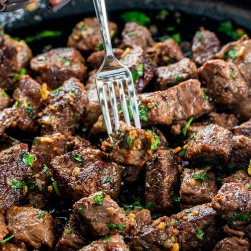

Garlic Steak Bites

A perfect dish for date night
My husband and I are big on frozen meals and quick snacks. That is until we found this easy to make recipe thats both delicious and quick to make. These steak bites are great from surprising your significant other with amazing flavor
Ingredients
- Steak of your choice
- Garlic Puree
- Garlic butter
- Stingin Honey bbq sauce
- Grated Parmesan cheese
- onion powder
- Garlic (minced)
- paprika
- Parsley (optional)
Steps
- Preheat airfryer to 400 degrees
- First take your choice of steak and slice it into small bite sized pieces and add them to a mixing bowl.
- Next add a squeeze of garlic puree, onion powder, paprika stingin Honey bbq sauce, Parmesan cheese and minced garlic to the mixing bowl. The bbq sauce will give it a sweet and spicy taste.Feel free to go as heavy or light with your seasoning
- Mix the seasoning with the steak bites until all the bites are covered.
- Add the seasoned steak to the airfryer for 8 minutes and make sure to shake the batch and the halfway mark.
- Heat up your garlic butter in the microwave until completely melted.
- Add steak to a clean mixing bowl and cover it with the melted garlic butter. Add more parmesan cheese, mix evenly, Garnish with Parsley and serve with a side of your choice
- Enjoy!